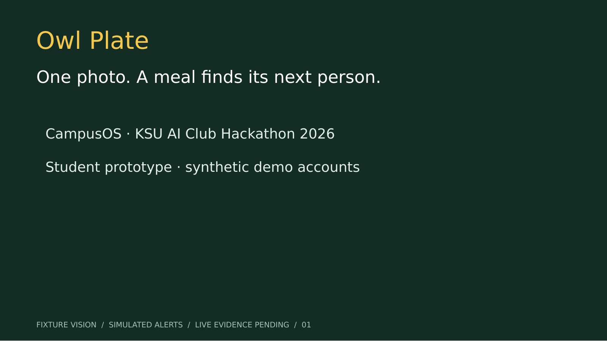

Fixture vision · simulated notifications · survey n=0 · live evidence unverified

Role 1: problem · Role 2: solution · Role 3: demo/narrator · Role 4: architecture and next steps. Names and team contributions still need confirmation. No microphone is recorded by this page.
No run yet. Only select “Actual spoken team rehearsal” when the team really participates. Downloaded logs stay local until you share them.